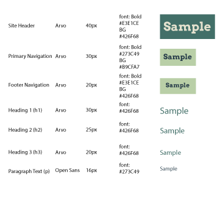

Typography
eastidahoweather.org
Heading Font: Arvo Bold
I choose Arvo Bold because it looks clean and impactful.
Body Font: Open Sans
I choose Open Sans for my body copy because of its readablilty and because it has a lighter weight so it won't overwhelm the reader.
